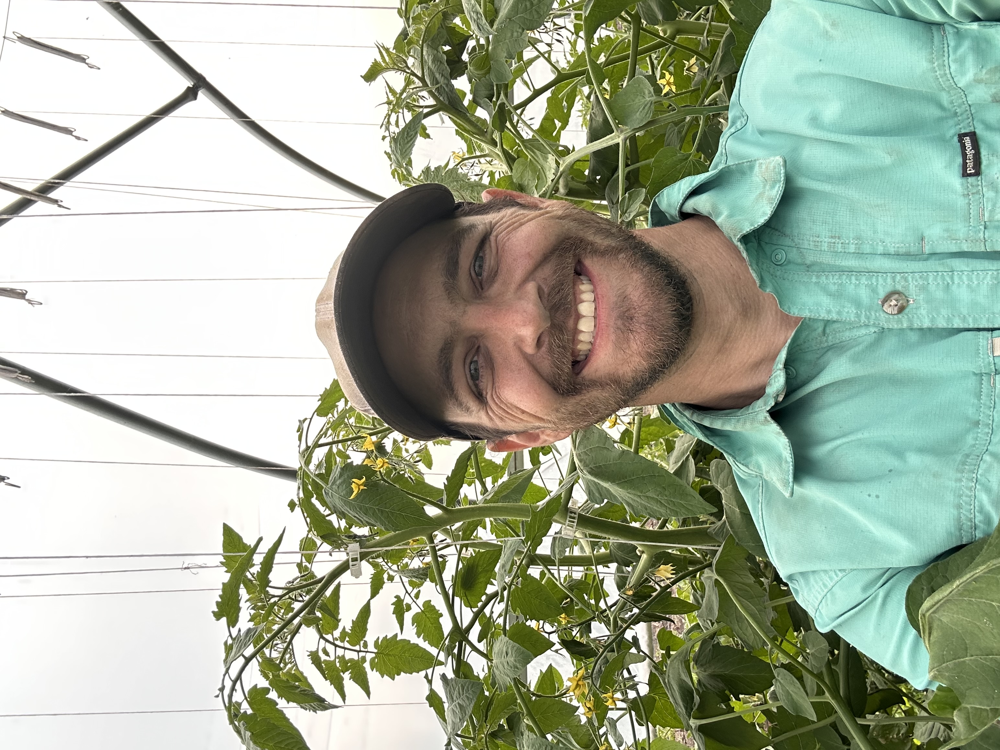
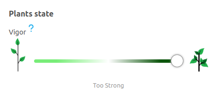

Episode 3 of 15 · May 15, 2025
Forcing plants into fruit production
This week, Allison & Drew have officially caught up with us in terms of growth! With cherry tomatoes now taller than Drew. Very nice!!
This week, Allison & Drew have officially caught up with us in terms of growth! With cherry tomatoes now taller than Drew. Very nice!!

Last week, we talked about a pollination issue. Guess what? They got 5 new fruits per leader! This is a nice comeback, but the work is not over yet.
The stem is still too thick. Even with the new fruits, plants still produce more energy than they consume.
Another sign that energy is misallocated: suckers grow at the end of clusters (see image). The plant chose to grow another head to deal with the energy excess.

Finally, notice the 3 aborted flowers on this cluster. That means the plant neglects fruiting.
In other words, we still have a low fruit load and too much energy. That energy ends up wasted in thicker stems, new heads, and bigger leaves, while we want it to grow fruits and flowers.
Now, what do we need to do?
We want to promote fruit setting by sending more energy this way. We’ll do this by stressing the crops a little. Pruning the suckers at the end of the cluster will do just that.
Until we rebalance the energy with a bigger fruit load, we can use the excess energy to generate new clusters. We achieve this by keeping the average temperature warmer in the tunnel.
We still need to consider the changing fruit load and the daily light plants receive. Since Ghost House Farm controls its greenhouse with Orisha, they only need to move the “Vigor Slider” to the “too strong” position. The rest is calculated for them.

Sending more energy towards fruiting and accelerating cluster generation should boost yields for the months to come while keeping productive plants.
Good job, Allison and Drew! Looking forward to seeing if the energy balance is back next week!